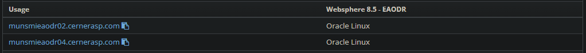
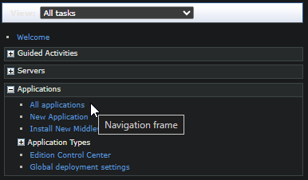
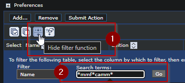
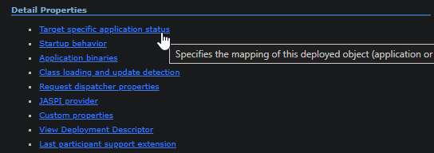
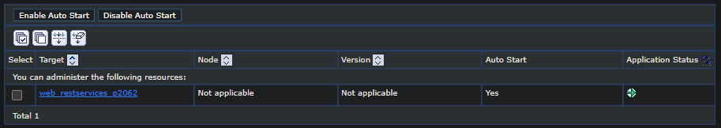
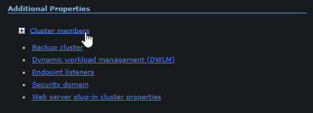
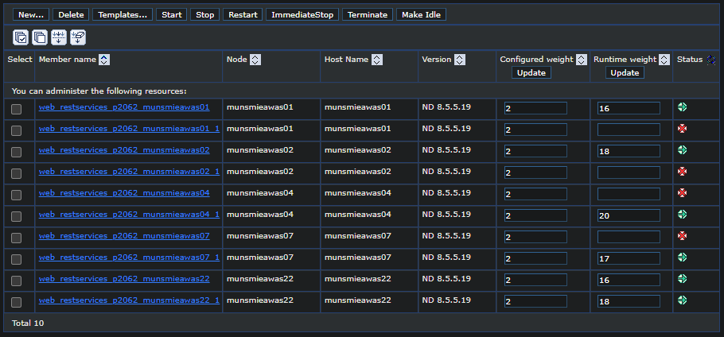
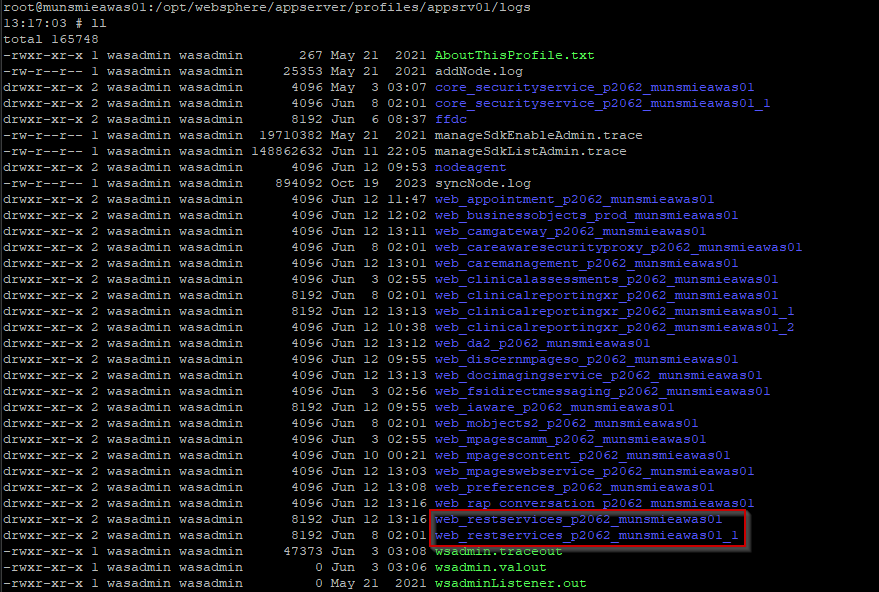

Back to Home
Although Splunk can give a high-level of errors, it's often needed to be able to grab the SystemOut.log for further detail when troubleshooting.
First, you will need to get the hostname for the primary ODR server. You can obtain this for RHO clients at: myRemedy
Using the hostname, fulfill the URL:
http://<insertODRhostname>:9060/ibm/console/logon.jsp
Typically, try the first listed. If it doesn't work or you don't find the service you're looking for, try the next one.
To login, you can use your Associate account. If that does not work, look for a "WAS" account from the myRemedy directory above.
Expand "Applications" and select "All Applications"
You can click the 'filter' button and search for the service you're looking for. Then select the "ACTIVE" one to view that service.
DO NOT CLICK REPEATEDLY if nothing happens, it can take a little while to load.
Under "Detail Properties", click "Target specific application status"
This will display the cluster the deployed ear is mapped to. Take note, and click on it.
Under 'Additional Properties', click on Cluster members
This will list out the WAS nodes (members) of that cluster. This can change when the JVM is cycled. All of the currently active/running servers under that cluster will have the green arrrow.
You will need to grab the SystemOut.logs from each instance listed unless you can find the specific one that the transaction you're looking for hit.
Note that some state "was01" and "was01_1". These are on the same node, just separate instances - they WILL be separate logs.
Connect to the WAS node, and navigate through the directory:
Note, there are separate directories for each instance mentioned above - so you may need to check which one has the transactions you're looking for, or grab both.
The SystemOut.log folder will be located in that directory.